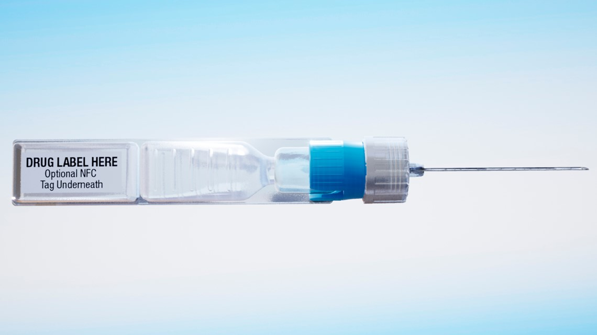
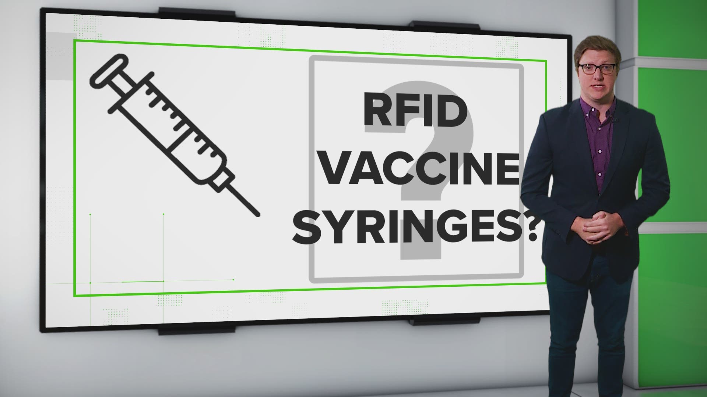

VERIFY: COVID-19 vaccine syringes to have trackers on the outside, not in vaccine
RFID microchips, which will be on the outside of the syringe when a vaccine is ready, are meant to record when and where vaccinations take place.
Several articles have called into question a government contract to acquire syringes for COVID-19 vaccines.The articles claim that the syringes contain microchips and the manufacturers’ website is their evidence.
Soon after, the articles and their findings were shared on social media with people claiming the COVID-19 vaccine will have a chip to track people.But these claims don’t accurately depict what the manufacturers have said about the syringes.
Do the syringes for upcoming COVID-19 vaccines contain microchips inside?
No.They will have chips on the outside of the syringe to track the vaccine’s usage.They aren’t inside the syringe or in contact with the vaccine itself.
It’s true that the United States Department of Defense awarded a $138 million contract to ApiJect Systems America to produce syringes for a COVID-19 vaccine when one is available.The DoD released some details of the contract in a news release from May.
ApiJect includes details of the RFID/NFC chip on its website’s home page.The chip will be under the label of the syringe, meaning on the outside of it, physically, and healthcare workers will have the option to tag it with their phone.That will allow them to upload a date, time and GPS location of each vaccination in real-time.
That doesn’t mean it tracks the person who has been vaccinated.It just means it tracks when and where a vaccination happens.The goal is to provide health administrators some kind of 'injection map' to see how many vaccinations have been administered in a certain area.
On a document explaining RAPID USA, one of the campaigns ApiJect was awarded to run for this vaccination program, they explain the data is anonymous.It will be used to create aggregate data.
The information on RAPID USA’s homepage reiterates what’s found on the ApiJect homepage: the chip is on the outside of the syringe and is used to track the time and place of injections in real-time.
In no way does the company producing these syringes suggest it will use them to inject people with microchips.
Posted On: 2020-07-16T22:14:00


Content Date: 2020-07-16
Download Date: 2021-05-30
Document ID: L0C04CSX0